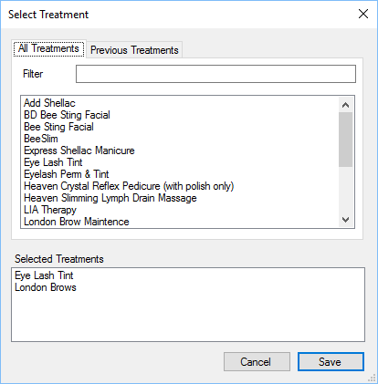

The Add Treatment gives staff members more control when adding treatments to an appointment.

The All Treatments section show’s all available treatments for the selected member of staff, you
can filter the list by the name of the treatment for brevity.
At the bottom of the form are the treatments selected for this appointment. Double click a
treatment to add it to the selected treatments list.